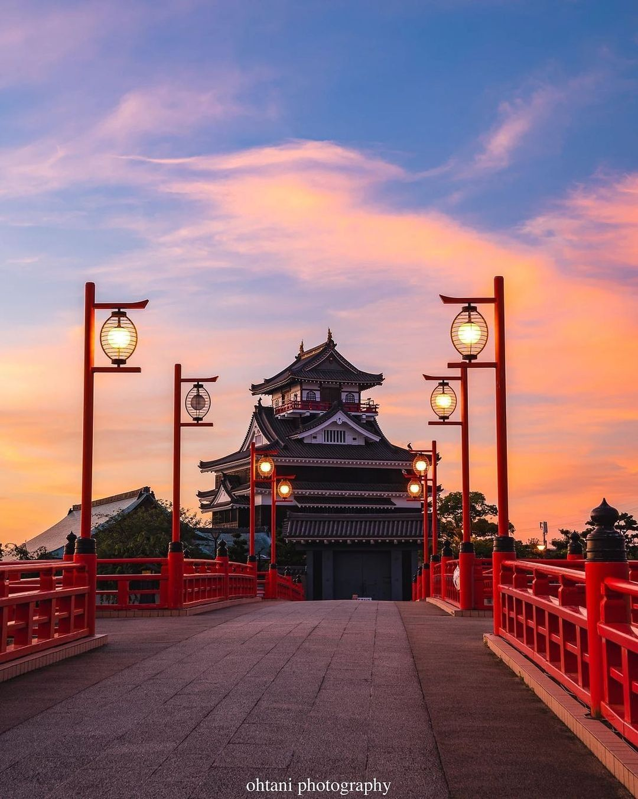
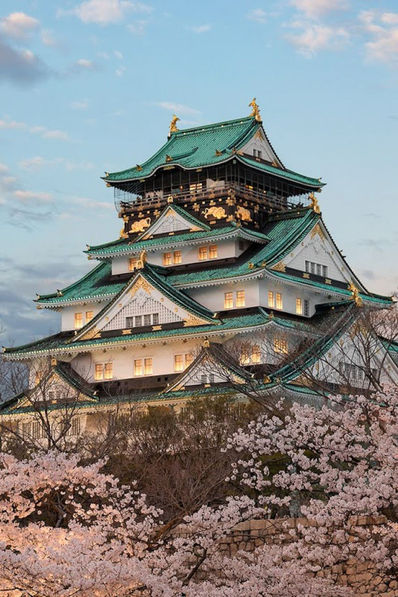

Nagoya, Japan
Nagoya blends creative energy with engineering cool, offering big city conveniences without the crush of Tokyo or Osaka. It is the natural base for a Ghibli themed trip because Ghibli Park sits in nearby Nagakute inside Aichi Expo Memorial Park, about an hour by local rail from Nagoya Station. Beyond the Ghibli connection, the city rewards anyone who loves trains and technology. The SCMAGLEV and Railway Park traces the evolution of shinkansen and maglev with full size trains, detailed dioramas, and hands on simulators. You can also follow Japan’s industrial story at the Toyota Commemorative Museum of Industry and Technology, located on an original plant site where live demonstrations link early textile machinery to modern robotics. For history and skyline views, Nagoya Castle stands at the center of a leafy park and is famous for its golden shachihoko ornaments. A short ride away, Atsuta Jingu offers quiet paths and a sense of living tradition at one of the country’s most revered Shinto shrines. Food is a highlight, with local Nagoya meshi such as miso katsu, eel hitsumabushi, and peppery tebasaki chicken wings. The Tokaido Shinkansen connects Tokyo and Nagoya in roughly 100 minutes on the fastest service, so the city works well as a stop between the Kanto and Kansai regions or as a relaxed home base for day trips. Overall, Nagoya feels like a Ghibli city with real range, and its calmer rhythm lets you breathe between adventures.
Learn More
Because it’s a city of Ghibli (It’s also near Aichi, where Ghibli Park is located). I also heard the view is beautiful. It’s a city in Japan I have never been to, and also because it’s Japan.